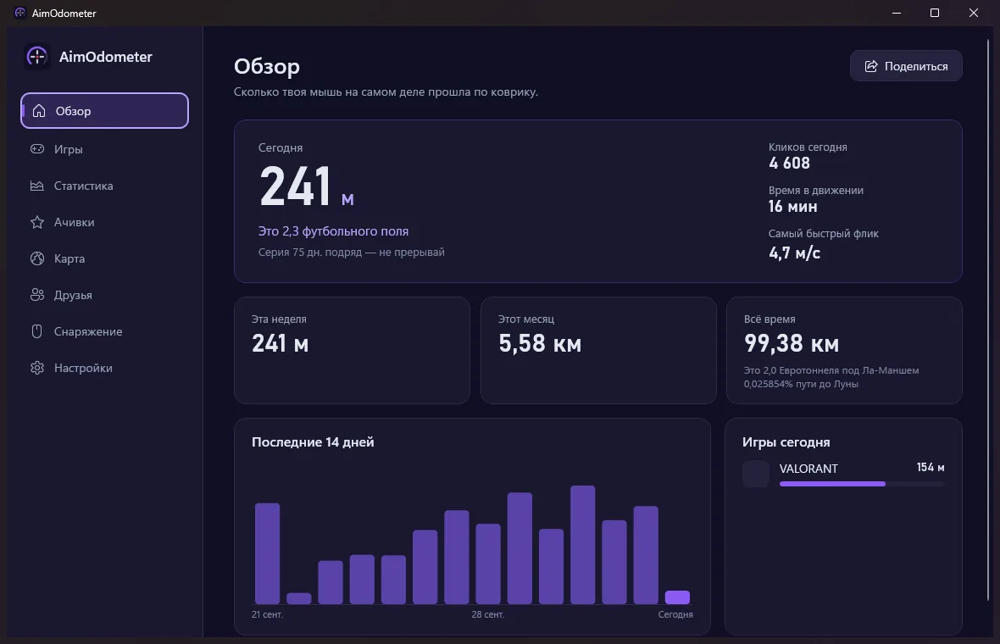

Статистика
Скачать
Каждый день в цифрах



Считает, сколько твоя мышь на самом деле проходит по коврику, по играм и по мышам
AimOdometer превращает твой аим в километры. Крошечный счётчик в трее читает мышь так же, как программы для мышей, и переводит каждое движение в настоящие сантиметры по коврику с учётом DPI, даже в шутерах, где курсор зажат в центре. Смотри, в какой игре ты бегаешь мышью больше всего, бей свои рекорды и соревнуйся с друзьями из Steam.
Сантиметры, метры и километры по коврику для каждой мыши, через Windows Raw Input. Чувствительность в игре и разрешение экрана не важны, важен только DPI, а мастер калибровки измерит его линейкой или банковской картой.
Игры Steam находятся сами, плюс ещё 55 из Riot, Epic, Battle.net и других. Игры, запущенные от имени администратора, вроде Genshin Impact, тоже считаются.
39 ачивок за пробег, серии, флики, ночные сессии и игры. А за километры, накрученные слишком низким DPI, дают позорные значки: Клоун, Дурак, Балбес и Накрутчик.
Твой пробег как прогулка по настоящим дорогам: от твоего города к известному или туда, куда выберешь.
Войди через Steam и сравнивай пробег с друзьями, а по желанию со всем миром. В каждой строке виден DPI, на котором набегано расстояние и поставлен рекорд флика.
Добавь коврик, рукав, глайды и мышь: AimOdometer считает, сколько километров прошла каждая вещь, и напомнит уведомлением, когда одна из них израсходует 90% ресурса, чтобы ты знал, когда её менять.
Нативный счётчик в несколько мегабайт работает в фоне и никогда не трогает игру; окно с графиками открывается, только когда нужно. Обновления ставятся сами.
У AimOdometer пока нет цифровой подписи (подпись через SignPath Foundation подключается). Нажми «Подробнее», затем «Выполнить в любом случае». Исходный код открыт на GitHub.
Настолько, насколько точен указанный DPI: измерь его один раз в программе линейкой или банковской картой. В Windows 11 фоновые программы получают движения мыши склеенными, это около 2% при очень быстром аиме; всё остальное считается точно.
Нет. Без входа через Steam AimOdometer только проверяет обновления на GitHub (можно отключить), а карта загружается лишь после разрешения на её вкладке.
Статистика лежит в %LOCALAPPDATA%\AimOdometer. Удалить программу можно в Параметрах Windows › Приложения; статистика останется, если не удалить её в настройках AimOdometer.